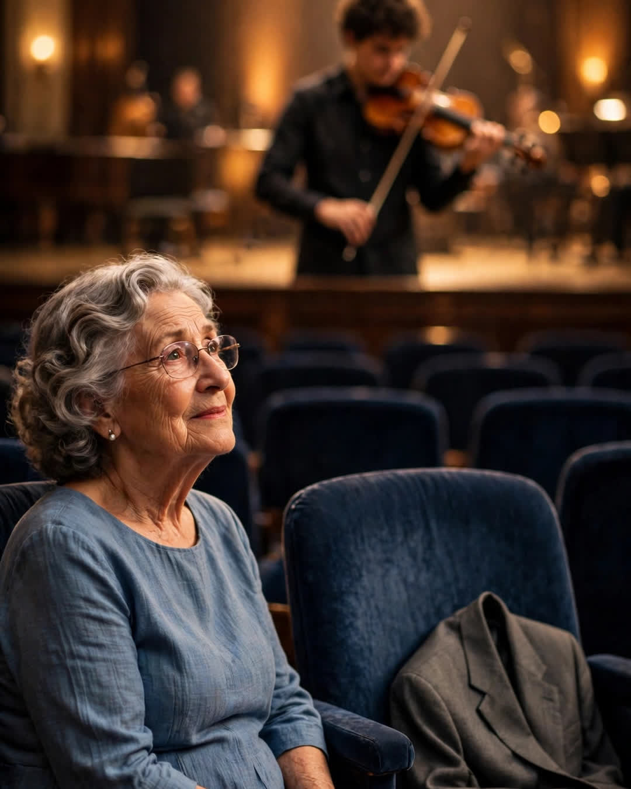

The Front Row Seat
A Clipp Kaili original story

In eighteen years of recitals, my grandparents never missed a single one — so after Grandpa died, Grandma kept saving him his seat.
They were not musical people. Grandpa Joe couldn't carry a tune in a bucket, and Grandma Ellen thought all classical music sounded like "weather coming." But from my first squeaking violin lesson at age six to my senior recital, if I looked out from any stage in this county, there they were: front row, aisle seats, Grandpa in his good jacket with a program folded down to a square in his pocket, Grandma with tissues already out — not for sadness. "Just in case the music gets in my eyes," she'd say.
Grandpa died the October of my senior year. Quietly, in his chair, six weeks before the biggest recital of my life — the winter concert, where I had been given the solo. Eighteen years of front rows, and the one that mattered most was going to have a hole in it.
I told my teacher I might not be able to play it.
"Play it or don't," she said gently. "But decide for the music, not for the empty chair. The music didn't leave."
The night of the concert, I walked out with my violin, bow already trembling, and looked down at the front row out of eighteen years of habit — and there was Grandma, in her aisle seat, in her good blue dress.
And beside her, on Grandpa's seat, laid neatly across the back of the chair, was his jacket.
His good one. The one with the program pocket. She had pressed it. She had carried it in on her arm like an escort, and laid it over that chair so carefully that the whole hall understood without a word being said. I later learned she had called the school ahead of time and paid for the seat. Paid for it. A ticket for a jacket, so no stranger would sit in her husband's place on his granddaughter's night.
The conductor raised his baton.
I don't remember deciding to play well. I remember aiming. Every note of that solo, I played to the second seat in the front row — to a gray jacket and the man I could still see sitting in it, leaning forward, program squared in his pocket, proud in the loud, embarrassing, front-row way that grandfathers specialize in. My bow stopped shaking by the second phrase. By the end, I was playing the best I had ever played in my life, and I knew exactly why.
You don't play worse for the people who aren't there.
You play like they're still listening — because in every way that built you, they are.
Afterward, Grandma folded that jacket over her arm and waited for me by the stage door, same as always, like the three of us were walking out together. "He heard it," she said, with total certainty, patting the jacket. "Front row. He had the best seat in the house. He always did insist on the best seat in the house."
I still play. I play in a community orchestra now, nothing fancy, and my grandmother is ninety-one and comes when her knees allow. She doesn't save the seat anymore. She says Grandpa has better seats now than we can give him, and she refuses to compete with heaven on seating.
But I keep a spare program from that winter concert in my violin case, folded down to a square.
Front row is not a place.
It's a promise people keep for each other — even from the other side of the curtain.
This story is a work of fiction, written to touch hearts and bring families closer.
← Back to all stories